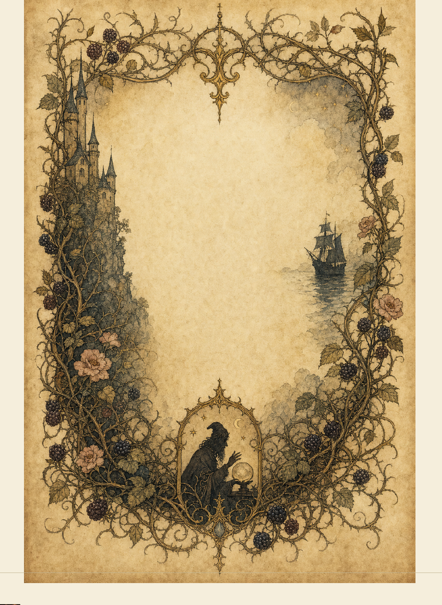
In sedici pagine — nella tradizione dei fratelli Grimm
Una fiaba che i bambini possono ascoltare, e che gli adulti possono riconoscere. Ogni pagina ha due letture: da un lato la fiaba in immagine e parola, dall'altro il significato adulto.
Capitolo 1
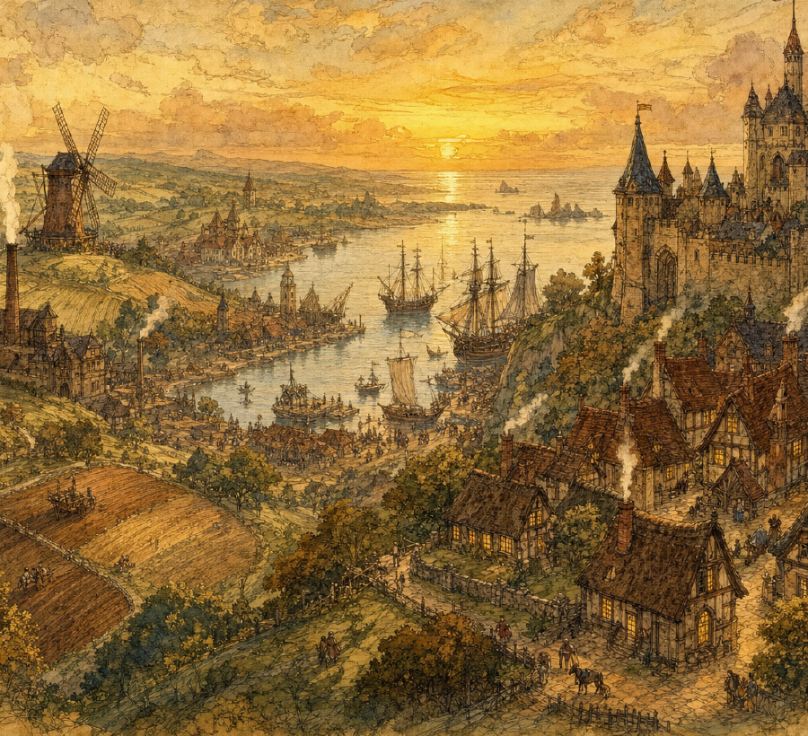
C'era una volta un continente che si era arricchito producendo ciò di cui il mondo aveva bisogno. I mulini giravano. Le navi salpavano. I campi erano pieni. Nel porto le merci cambiavano di mano.
E la gente pensava che sarebbe sempre stato così.
Capitolo 2
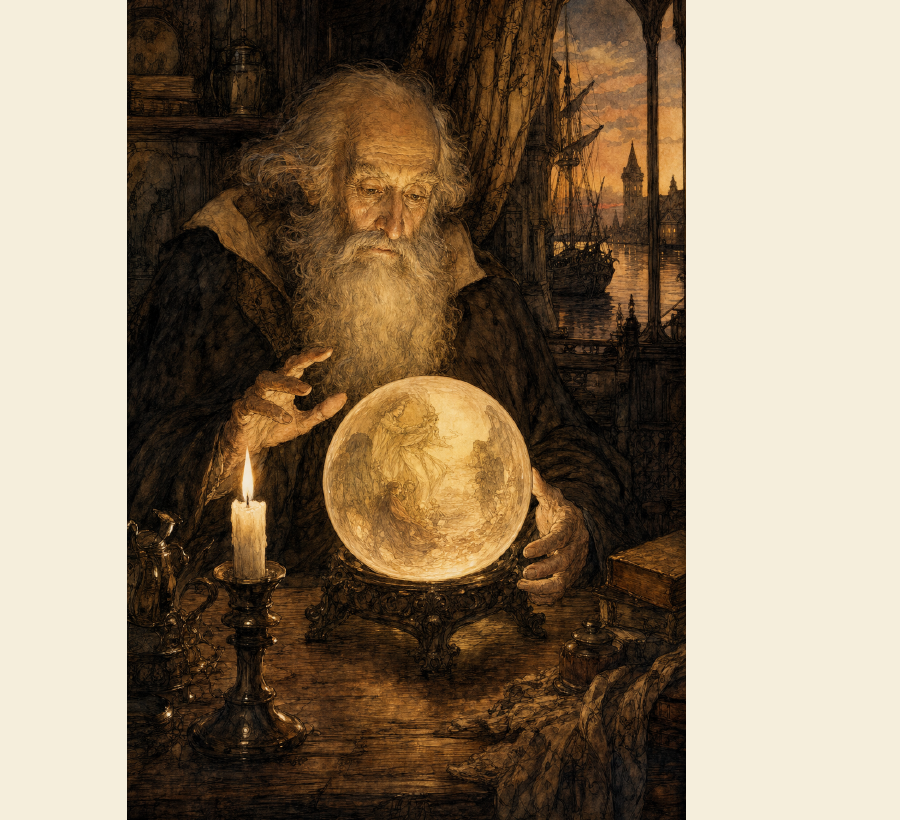
In una piccola stanza vicino al porto siede un vecchio.
Davanti a lui, sul tavolo, c'è una sfera di vetro. Nella sfera non si vedono menzogne, solo ciò che è reale.
Vieni più vicino, dice, e guarda con me.
Racconto solo verità, e ognuna è pienamente documentata.
Capitolo 3
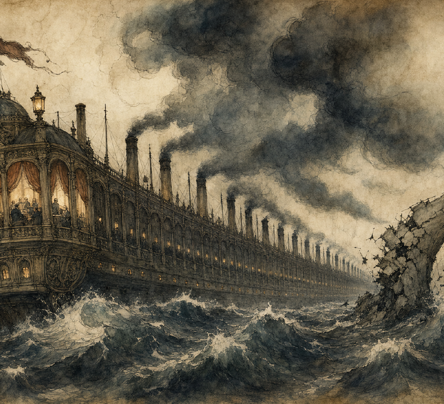
Guarda nella sfera. Lì naviga una nave. È lunga dieci chilometri. Il ponte di comando è molto indietro. Sul ponte si governa. Si vota, si tengono discorsi, si scattano fotografie. Ma la prua naviga dieci chilometri più avanti. E il ponte non vede la prua. La prua si sta accartocciando.
Capitolo 4
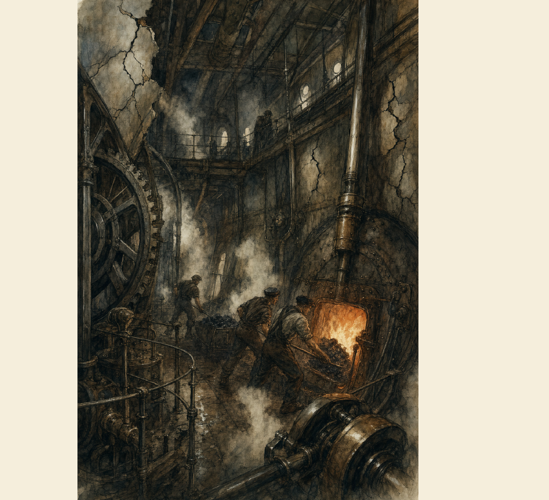
La nave perde velocità. La prua accartocciata crea resistenza. Cosa fa il ponte di comando? Il ponte dà più vapore. Più carbone sul fuoco. Più pressione. Più resistenza. Più vapore. Più resistenza. E nella sala macchine si lavora senza sosta, e nessuno si chiede se la nave stia ancora navigando verso qualche luogo.
Capitolo 5
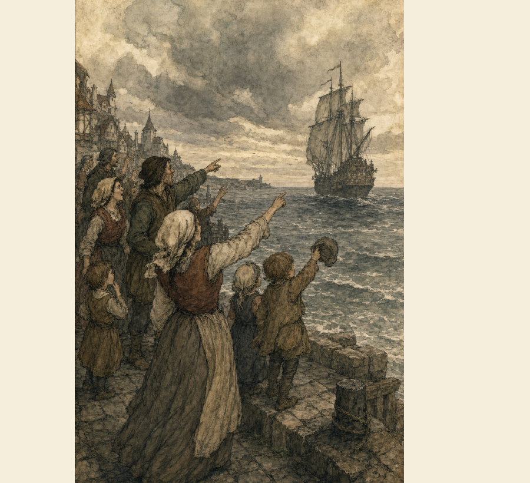
Sulla banchina ci sono le persone comuni. Vedono la prua di lato. Gridano. Indicano. Cercano di avvertire. Ma il ponte di comando è troppo lontano. Il vento non porta le loro voci verso l'alto. E l'equipaggio ha chiuso le tende, perché dentro c'è più luce che fuori.
Capitolo 6
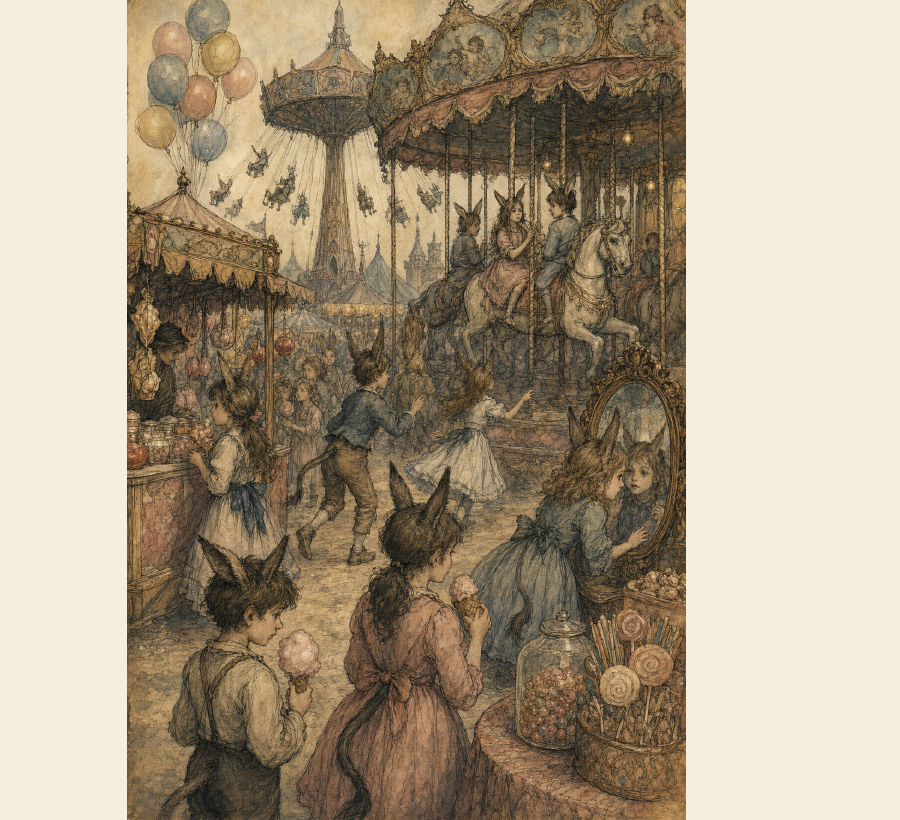
Ma anche noi, il popolo, siamo diventati Pinocchio. Per tre generazioni siamo stati condotti nel Paese dei Balocchi. Ogni desiderio veniva realizzato. Nessuno ci chiedeva nulla. E senza accorgercene abbiamo iniziato a cambiare. Le nostre orecchie si sono allungate. Le nostre code sono cresciute. Nello specchio non lo vediamo.
Capitolo 7
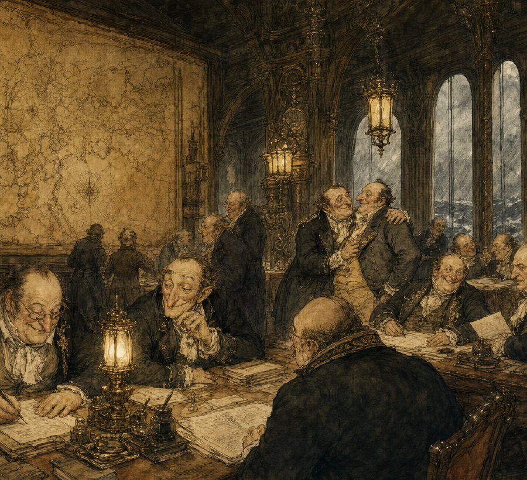
Nella grande sala a poppa della nave siedono i governanti. Sono intelligenti. Sono ben istruiti. Hanno buone intenzioni. Firmano documenti. Si danno pacche sulle spalle. Alla parete pende una grande mappa dell'anno 1992. Nessuno guarda dalla finestra. Fuori c'è tempesta.
Capitolo 8
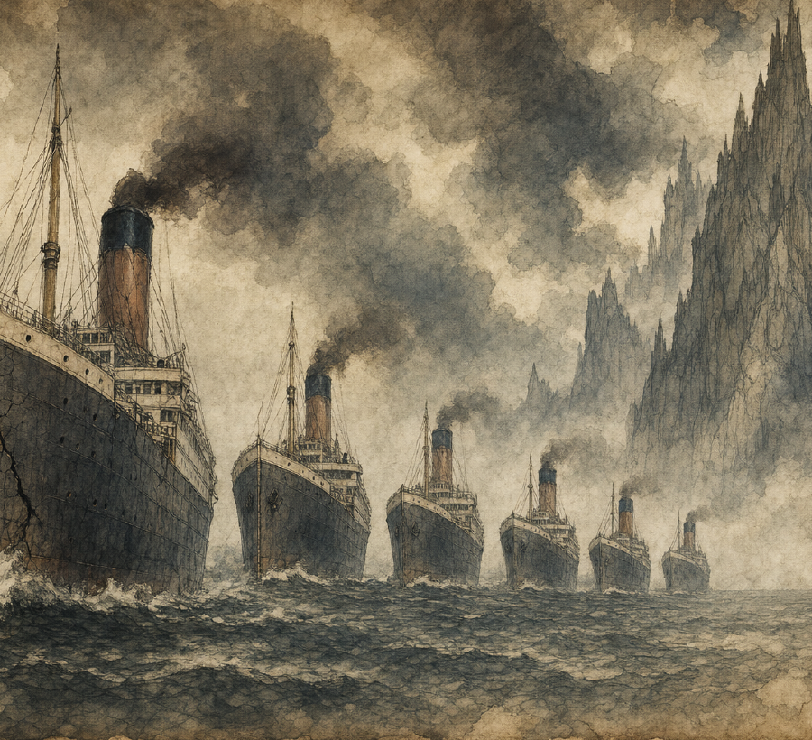
E non è una sola nave. Sono cinque. La Francia naviga in testa. L'Inghilterra segue. Poi Italia e Germania insieme. La Spagna chiude la fila. Davanti a loro si alza un grande scoglio nella nebbia. Navigano tutte dritte verso di esso. E sul ponte di comando di ogni nave si vota sul colore delle scialuppe di salvataggio.
Capitolo 9
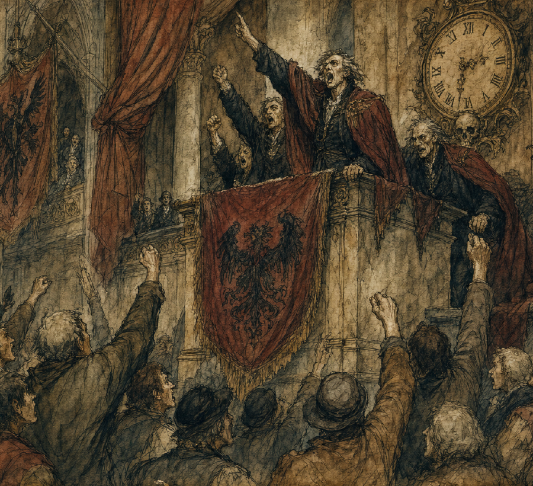
Nella grande sala a terra c'è un palco. Lì uomini e donne si gridano addosso a vicenda. Chi taglia più affilato vince l'applauso. Sotto, la folla esulta come a un torneo medievale. Sopra la porta l'orologio batte le dodici. Nulla di ciò che si dice lì è verità. Si vince o si perde, e basta.
Capitolo 10
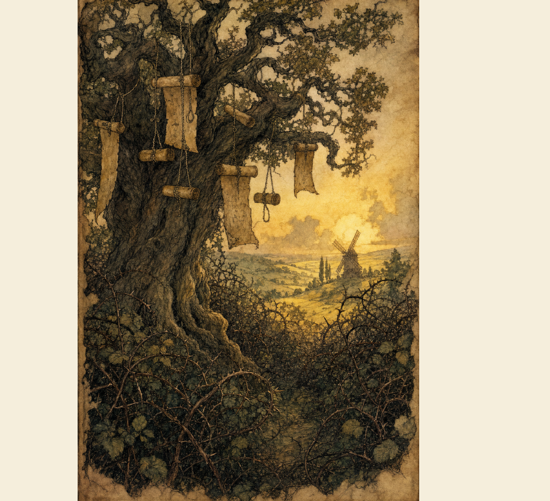
Nel bosco c'è una vecchia quercia. Dai suoi rami pendono vecchie pergamene. Attorno alla quercia cresce un muro di spine, vecchio di trent'anni, denso e affilato. Dietro le spine si estende una valle verde con un mulino funzionante e un campo solare. Tutti possono vedere la valle. Nessuno può raggiungerla.
Capitolo 11
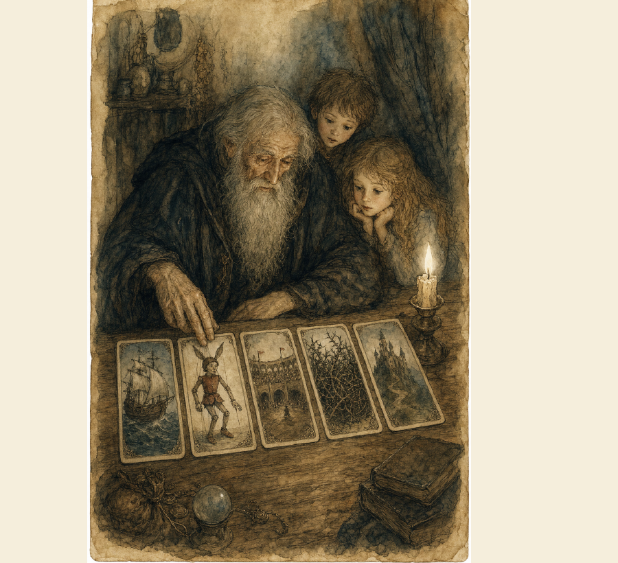
Vieni più vicino, dice il vecchio. Stendo le carte. Sulla prima carta, una nave. Sulla seconda, un burattino con le orecchie d'asino. Sulla terza, un'arena. Sulla quarta, una siepe di spine. Sulla quinta, un castello lontano. Le carte non predicono, dice. Ordinano ciò che è già certo. Guarda bene. E pensa a cosa farai.
Capitolo 12
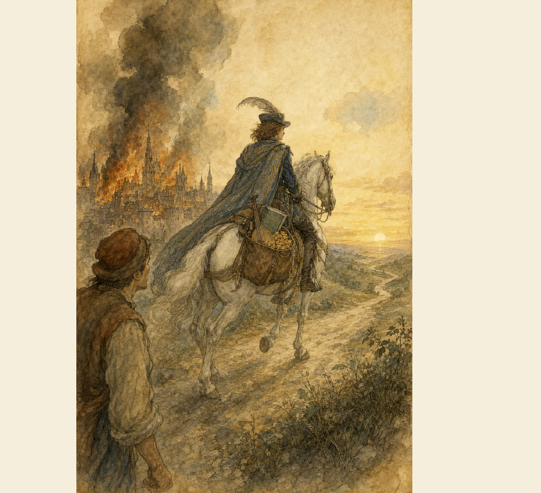
E poi arriva il giorno in cui viene sellato il cavallo bianco. Sul suo dorso cavalca qualcuno che sa vedere lontano. Nella sua borsa porta oro, un libro, uno strumento. Dietro di lui la città comincia a bruciare. Non si guarda indietro. Ciò che porta è troppo importante per perderlo nel fuoco.
Capitolo 13
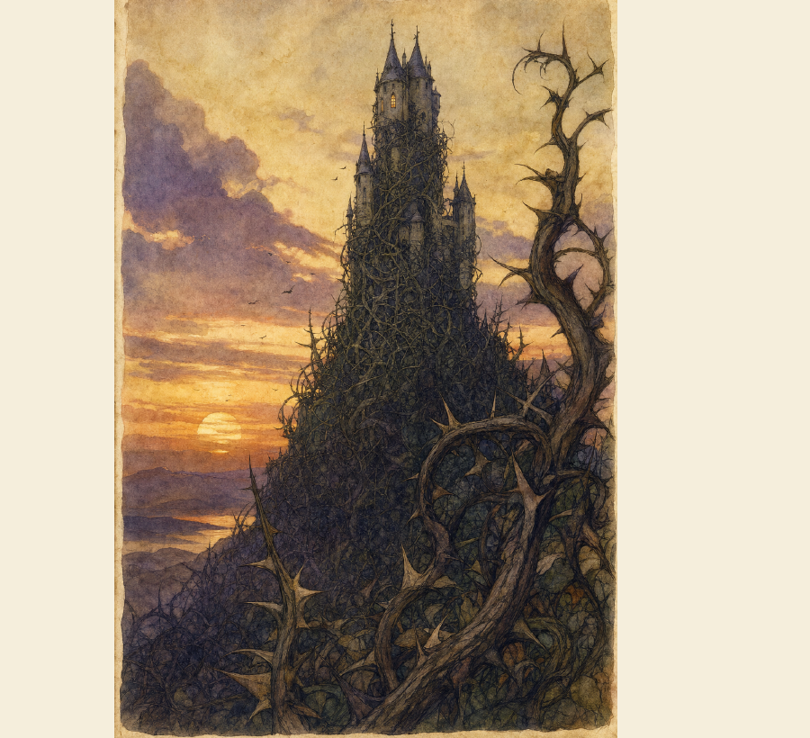
Ben oltre le colline si trova un castello su una montagna. Attorno al castello cresce un muro di spine, vecchio di trent'anni. In una torre arde ancora una luce. Al suo interno dorme la principessa del futuro. Non è debole. Attende. Attende qualcuno che possa attraversare le spine.
Capitolo 14
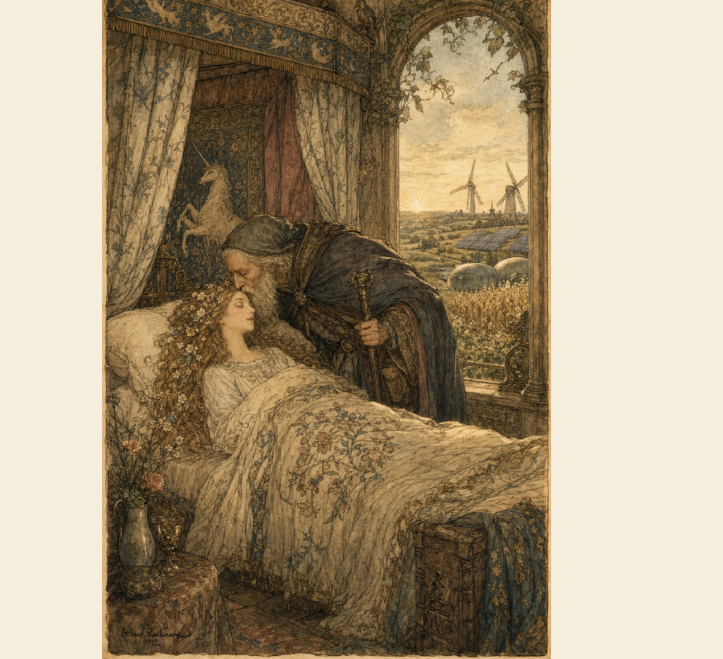
Jacobus pota le spine. Si fa strada. Trova la camera. Si china sulla principessa dormiente e le dà il bacio. Il bacio è Nova Democratia. Il bacio è il Partito Per la Gente. Il bacio è Carbon Alert. Il bacio è la cooperazione con i paesi dell'equatore. Dalla finestra brilla il primo sole.
Capitolo 15
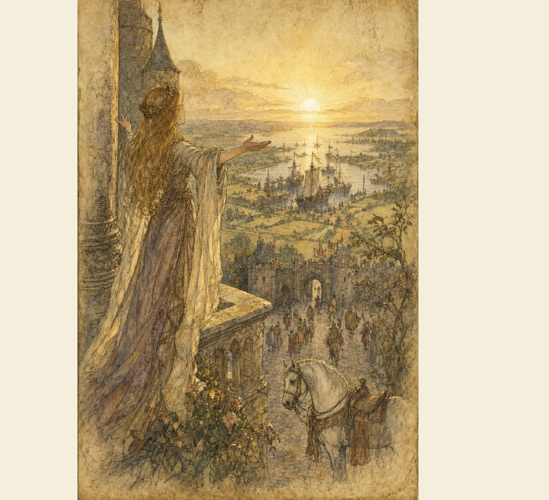
E la principessa si risveglia. Esce sul balcone. Vede che il capitale è tornato — europeo e non straniero. Vede persone arrivare da ogni direzione. Vede nuove navi, più piccole e più agili di quella vecchia. E inizia il capitolo successivo. Quello è il capitolo che lei e i suoi figli vivranno. O no. La scelta è sua.